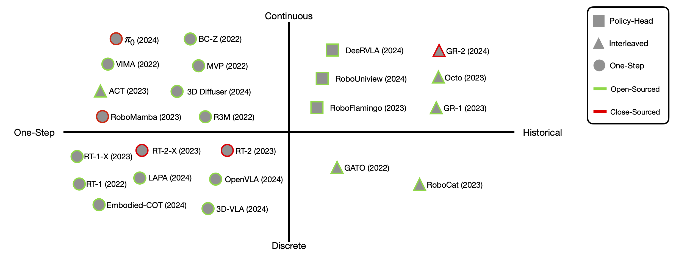

Towards Generalist Robot Policies:
What Matters in Building Vision-Language-Action Models
Introducing RoboVLMs, a new family of Vision-Language-Action Models for robots, which have minimal manual designs and set new state-of-the-art performance in both simulation tasks and real-world experiments. We provide a comprehensive empirical study with extensive experiments over different VLA design choices:
Why do we want VLAs: We explore the advantages of VLAs in the role of generalist robot policies.
How should we formulate VLAs: We categorize the structure of VLAs and explore every potential combination of them.
Which VLM backbone is better for VLAs: We test 8 different VLM backbones to find out the best one to build VLAs.
When should we leverage cross-embodiment datasets: We validate if pre-training, co-training, and post-training on cross-embodiment data can improve the performance of VLAs.
RoboVLMs serves as a unified platform to implement VLAs and make fair comparisons. Along with this work, we also open-source the dataset in ByteDance Robot Benchmark used for training our real-world robot.
Benchmarking: Fine-tune a large and diverse set of existing VLMs into VLAs under different settings and formulations to benchmark their performance.
Models: We open-source the model weights of our strongest VLAs fine-tuned from open-source VLMs.
Codebase: A unified and flexible VLA framework for easy VLMs integration within 30 lines of codes.
Dataset: Real-world dataset in ByteDance Robot Benchmark, including 20 tasks and 8K+ trajectories.
Tsinghua University ByteDance Research CASIA MAIS-NLPR
Shanghai Jiao Tong University National University of Singapore
*Project lead†Corresponding author
In recent years, foundation Vision Language Models (VLMs) have demonstrated strong capabilities in multi-modal representation learning, comprehension, and reasoning. Building vision-language-conditioned robotic policies, i.e., Vision-Language-Action Models (VLAs), have become a natural extension by injecting action components into the VLMs. Existing work has demonstrated the effectiveness and generalization of VLAs in multiple scenarios and tasks. Nevertheless, as existing VLAs differ in their backbones, action-prediction formulations, data distributions, and training recipes, a systematic understanding of the design choices of VLAs remains a missing piece of the VLA research.
In this work, we conduct a comprehensive empirical study with extensive experiments over different VLA design choices, and introduce a new family of VLAs, RoboVLMs, which have minimal manual designs and achieve a new state-of-the-art performance in three simulation tasks and real-world experiments.
Four Key Problems for VLAs
RoboVLMs explore the advantages of VLAs for generalist robot policies, and focus on the following 4 questions:
👉Why do we want VLAs? We explore the advantages of VLAs over other generalist robot policies.
👉Which backbone to select? We explore 8 different VLM backbones and provide insights to select the optimal one for your tasks.
👉How to formulate? We categorize the structure of varying VLAs and explore every potential combination of them.
👉When to add cross-embodiment data? We empirically investigated potential benefits from large-scale cross-embodiment datasets.
Simulation and Real Benchmarks
To comprehensively evaluate the performance of VLAs, in this work, we benchmark all models on a diverse set of benchmarks and robotic manipulation tasks in both simulation and the real world.
We choose two well-known and widely used simulation benchmarks, CALVIN, SimplerEnv, and a real-world robot manipulation benchmark, ByteDance Robot Benchmark.
Two simulative and one real-world benchmarks. We show environment setups and example tasks involved.
Categorization of VLAs
Although the rigorous definition of VLAs is not consistent in different works, we regard VLAs are the models fine-tuned from pre-trained VLMs.
We categorize VLA structures based on two primary designs: 1) INPUT whether the history is observable (horizontal axis); 2) OUTPUT: whether action is continuous or discrete (vertical axis).

The categorization of VLAs and existing generalist policies.
👉Why do we want VLAs?
🔍Question 1 Are VLAs a good choice for building generalist robot policies?
📌Finding 1 VLA is the best choice in our extensive experiments to build generalist robot policies, in terms of robustness, generalization, and data efficiency.
Performance on CALVIN shows the state-of-the-art performance of the best VLA (KosMos P.H.) built by RoboVLMs.
Method
VLA?
Train
1
2
3
4
5
Avg. Len.
MCIL
✖
ABCD
0.373
0.027
0.002
0.000
0.000
0.40
R3M (Frozen)
✖
ABCD
0.085
0.005
0.001
0.000
0.000
0.10
Voltron (Frozen)
✖
ABCD
0.101
0.003
0.001
0.000
0.000
0.11
Voltron (Fine-tuned)
✖
ABCD
0.837
0.566
0.352
0.208
0.115
2.08
RT-1
✖
ABCD
0.844
0.617
0.438
0.323
0.227
2.45
HULC
✖
ABCD
0.889
0.733
0.587
0.475
0.383
3.06
GR-1
✔
ABCD
0.949
0.896
0.844
0.789
0.731
4.21
KosMos P.H. (RoboVLMs)
✔
ABCD
0.967
0.930
0.899
0.865
0.826
4.49
MCIL
✖
ABC
0.304
0.013
0.002
0.000
0.000
0.31
Voltron (Frozen)
✖
ABC
0.026
0.001
0.000
0.000
0.000
0.03
Voltron (Fine-tuned)
✖
ABC
0.569
0.272
0.105
0.038
0.014
1.00
RT-1
✖
ABC
0.533
0.222
0.094
0.038
0.013
0.90
HULC
✖
ABC
0.418
0.165
0.057
0.019
0.011
0.67
GR-1
✔
ABC
0.854
0.712
0.596
0.497
0.401
3.06
KosMos P.H. (RoboVLMs)
✔
ABC
0.980
0.936
0.854
0.778
0.704
4.25
On SimplerEnv, our model achieves the highest average performance on both WidowX + Bridge and Google Robot environments, demonstrating the general effectiveness and robustness against different settings and diverse manipulation tasks.
Evaluation results on the SimplerEnv simulation benchmarks.
We investigated the impact of vision-language pre-training on the generalization and data efficiently.
Vision-language pre-training is essential for both of them since an aligned vision-language representation provides a robust foundation for visual understanding, enabling the policy to focus on learning manipulation skills.
Ablation study of VLAs for vision-language pre-trainining.
🔍Question 2 How do VLAs from RoboVLMs perform in real-world scenarios?
📌Finding 2 The best VLA built on RoboVLMs appears strong effectiveness and robustness in real-robot tasks, especially under unseen settings.
The best VLA built on RoboVLMs achieve the best performance in all real-world evaluation setups, extremely on Simple and Unseen Background, demonstrating their effectiveness and generalization ability.
Real-robot performance of our best VLA (KosMos P.H.) built with RoboVLMs against baselines.
👉How should we formulate VLAs?
🔍Question 3 What is the best-performing VLA structure?
📌Finding 3 The VLA achieves its best performance when using multi-step historical observations as inputs and continuous actions as outputs. For integrating history with continuous action space, the policy head structure performs better.
We demonstrate the ablation study of different VLA formulations on CALVIN benchmark over the effect of action space, history integration, and history organizing format. The results show significant improvements when taking multi-step historical observations as inputs, continuous actions as outputs, and a policy head to organize history.
Backbone
Structure
Action Space
1
2
3
4
5
Avg. Len.
LLaVA
One-Step
Disc.
0.809
0.484
0.278
0.175
0.103
1.85
One-Step
Cont.
0.793
0.592
0.420
0.329
0.235
2.37
Interleaved
Cont.
0.892
0.645
0.436
0.282
0.181
2.44
Policy-Head
Cont.
0.873
0.678
0.506
0.376
0.275
2.71
Flamingo
One-Step
Disc.
0.681
0.318
0.133
0.062
0.029
1.22
One-Step
Cont.
0.681
0.354
0.158
0.076
0.035
1.30
Policy-Head
Cont.
0.964
0.896
0.824
0.740
0.662
4.09
KosMos
One-Step
Disc.
0.424
0.097
0.023
0.005
0.002
0.55
One-Step
Cont.
0.881
0.599
0.364
0.221
0.124
2.19
Interleaved
Cont.
0.987
0.915
0.824
0.737
0.660
4.12
Policy-Head
Cont.
0.967
0.930
0.899
0.865
0.826
4.49
Ablation study over action space, history integration, and history organizing format. All variants are trained on split ABCD and tested on split D.
''Disc." is short for discrete and ''Cont." represents continuous action space. Results are reported with the best-behaved model checkpoints within 5 epochs.
🔍Question 4 How do different formulations affect the generalization and data efficiency for VLAs?
📌Finding 4 Leveraging policy head for history fusion is the best in terms of generalization and data efficiency.
We empirically study and evaluate the generalization and data efficiency of various VLA formulations, aiming to provide practical insights for training high-performing VLAs. Specifically, we assess the generalization and data efficiency of different VLAs built with RoboVLMs by training models with different architectures and formulations on varying data scales using the CALVIN datasets. Our best model, based on the KosMos backbone and leveraging a policy head for history fusion, exhibits only a slight performance drop in zero-shot settings. In contrast, other formulations experience significant performance declines. This finding highlights that the model architecture significantly impacts generalization.
Performance on CALVIN benchmark, all models are trained on split ABCD (top) / ABC (bottom), and evaluated on split D.
We report the success rates of consecutive five tasks (left axis) and the averaged task length (right axis), using the model checkpoints at 5-th epoch.
For data efficienty, we observe trends similar to those for generalization. Our best model consistently achieves the highest performance when training data is scaled down, with a notably slower performance decline compared to other formulations. Additionally, comparisons of encoder-decoder VLAs at different scales reveal that larger models tend to be more data efficient.
VLA Architecture
Data Scale
1
2
3
4
5
Avg. Len.
Flamingo P.H. 3B
0.1x
0.120
0.007
0.000
0.000
0.000
0.13
Flamingo P.H. 4B
0.1x
0.448
0.084
0.014
0.003
0.001
0.55
Flamingo P.H. 9B
0.1x
0.547
0.190
0.067
0.020
0.003
0.83
KosMos Inter.
0.1x
0.938
0.701
0.445
0.270
0.140
2.49
KosMos P.H.
0.1x
0.958
0.684
0.431
0.270
0.176
2.52
Flamingo P.H. 3B
1x
0.964
0.896
0.824
0.740
0.662
4.09
Flamingo P.H. 4B
1x
0.936
0.847
0.750
0.667
0.586
3.79
Flamingo P.H. 9B
1x
0.955
0.879
0.784
0.714
0.634
3.97
KosMos Inter.
1x
0.987
0.915
0.824
0.737
0.660
4.12
KosMos P.H.
1x
0.967
0.930
0.899
0.865
0.826
4.49
Flamingo P.H. 3B
5x
0.971
0.916
0.856
0.794
0.716
4.21
KosMos Inter.
5x
0.989
0.940
0.892
0.842
0.795
4.46
KosMos P.H.
5x
0.968
0.937
0.903
0.872
0.830
4.51
The performance of VLAs implemented with different formulations and training data scales.
The results for 0.1x and 1x data are the best-behaved model checkpoints within 5 epochs, and the results for 5x data are the model performance at 1-st epoch.
We name different implemented VLAs by their VLM backbones and the way of history modeling.
👉Which VLM backbone is better for VLAs?
🔍Question 5 Which type of VLMs is most suitable for constructing VLAs?
📌Finding 5 KosMos and Paligemma are distinctively better than other VLMs in terms of training VLAs. We hypothesize they benefit from sufficient vision-language pretrain.
We base our VLAs on a diverse selection of pre-trained large-scale vision-language backbones with varying architectures, training data scales, model sizes, and latent embeddings. Through all of our experiments, we found that KosMos and Paligemma demonstrate the distinctively better performance possibly benefitting from sufficient vision-language pre-training. But it is still unclear and an open problem how other factors affect the resulting VLA due to large diversity of VLM backbones including training data, architecture, model size, data scale, LLM backbones, training recipes, etc.
Backbone
#Token
Data Scale
Model Size
1
2
3
4
5
Avg. Len.
Flamingo
64
1B+
3B
0.692
0.418
0.241
0.14
0.074
1.57
Flamingo
64
1B+
4B
0.689
0.456
0.281
0.181
0.107
1.71
Flamingo
64
1B+
9B
0.744
0.485
0.298
0.187
0.112
1.83
Qwen
256
350K
9B
0.221
0.062
0.014
0.002
0.000
0.30
MoonDream
576
UNK
3B
0.717
0.473
0.296
0.198
0.127
1.81
Uform
256
10M
1.3B
0.778
0.577
0.407
0.300
0.216
2.28
KosMos
64
90M
2B
0.922
0.807
0.701
0.615
0.549
3.59
Paligemma
256
10B
3B
0.931
0.836
0.752
0.683
0.616
3.82
The performance of the built VLAs based on VLMs with different image token numbers and VL pre-train data scales.
Note that for VLMs with multi-stage training, the data scale refers to the data amount utilized for the final stage of fine-tuning. ''UNK'' denotes unknown.
👉When Should We Leverage Cross-Embodiment Datasets?
🔍Question 6 What types of data from large-scale cross-embodiment datasets are the most beneficial for building VLAs and when should we use them?
📌Finding 6 (1) Co-training with in-domain data, even from different tasks, proves beneficial for model performance; (2) Cross-embodiment data is more effective when utilized during the pre-training stage.
We conduct a series of experiments to investigate different strategies for using external large-scale cross-embodiment datasets, Open-X Embodiment. Results below demonstrate that cross-embodiment pre-training offers benefits to improve robustness as well as few-shot performance. While co-training with cross-embodiment data does not have significant improvements compared to using only in-domain data.
Ablation studies for cross-embodiment training on SimpleEnv. We evaluate four different training recipes. On the WidowX+Bridge environments, we test (1) Bridge Finetune finetunes the VLA directly on the full Bridge datasets (tested tasks not included); (2) OXE Pre-Train pre-train the VLA on OXE dataset; (3) Post-Train train the OXE pre-trained VLA on Bridge datasets. On the Google Robot environments, we test (1) RT-Partial Finetune finetunes the VLA on tested RT tasks only; (2) RT Finetune finetunes the VLA on the full RT dataset (tested tasks included), along with (3) OXE Pre-Train and (4) Post-Train on tested RT tasks stage. -->
The effect of cross-embodiment pre-training on OXE datasets for CALVIN few-shot learning.
Rollout Examples
SimplerEnv - WidowX+Bridge
SimplerEnv - Google Robot
Real Robot: ByteDance Robot Benchmark
Unseen Distractor
Unseen Background
Unseen Target Object
Novel Skill Description
Acknowledgments
We thank all the members of the robotics research team at ByteDance Research for their assistance in real-world data collection, setup design, robot maintenance, and experiments. The author Minghuan Liu is supported by the ByteDance Scholarship.
BibTeX
@article{li2023generalist,
title={Towards Generalist Robot Policies: What Matters in Building Vision-Language-Action Models},
author={Li, Xinghang and Li, Peiyan and Liu, Minghuan and Wang, Dong and Liu, Jirong and Kang, Bingyi and Ma, Xiao and Kong, Tao and Zhang, Hanbo and Liu, Huaping},
journal={arXiv preprint arXiv:2412.14058},
year={2024}
}